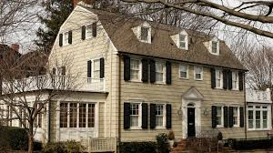

Es una de las historias de terror más famosas de la vida real. Se encuentra en 112 Ocean Avenue, Amityville, Nueva York, y su fama comenzó con un crimen espeluznante.
El crimen de la familia DeFeo
El 13 de noviembre de 1974, Ronald DeFeo Jr. asesinó a sus padres y a sus cuatro hermanos mientras dormían, usando un rifle de gran calibre. Afirmó que escuchaba voces que lo incitaban a cometer los asesinatos, lo que contribuyó a la leyenda de que la casa estaba maldita.
Los Lutz y los fenómenos paranormales
Un año después, la familia Lutz compró la casa a un precio reducido. Sin embargo, solo vivieron allí 28 días antes de huir, alegando que experimentaron sucesos paranormales aterradores. Entre los eventos que reportaron estaban:
- Olores extraños y manchas inexplicables en las paredes.
- Apariciones de figuras demoníacas, incluyendo una criatura con ojos brillantes.
- Pesadillas detalladas sobre los asesinatos, con información que no conocían.
- Un exorcismo fallido, tras el cual el sacerdote que lo realizó sufrió enfermedades y accidentes.
Investigaciones y controversia
El caso fue investigado por Ed y Lorraine Warren, quienes afirmaron que la casa tenía una presencia demoníaca poderosa. Sin embargo, algunos escépticos creen que los Lutz inventaron la historia para obtener beneficios económicos.
La historia inspiró el libro The Amityville Horror: A True Story (1977) y varias películas, convirtiéndose en un ícono del terror.

El poltergeist de Enfield
Es uno de los casos paranormales más famosos de la historia, ocurrido entre 1977 y 1979 en una casa ubicada en Enfield, Londres. La familia Hodgson, especialmente las hijas Janet (11 años) y Margaret (13 años), fueron el centro de los fenómenos inexplicables.
Manifestaciones paranormales
- Muebles moviéndose solos: Un policía que acudió a la casa afirmó haber visto una silla deslizarse sin que nadie la tocara.
- Levitación de Janet: Fotografías tomadas por investigadores muestran a Janet aparentemente flotando en el aire.
- Voces demoníacas: Janet comenzó a hablar con una voz profunda y amenazante, afirmando ser el espíritu de un hombre llamado Bill Wilkins, quien supuestamente murió en la casa.
- Objetos voladores: Se reportaron juguetes y piedras lanzadas por una fuerza invisible.
- Ruidos inexplicables: Golpes en las paredes y sonidos de ladridos sin origen aparente.
Investigaciones
El caso fue investigado por Maurice Grosse y Guy Lyon Playfair, miembros de la Sociedad para la Investigación Psíquica, quienes consideraron que los eventos eran genuinos. Sin embargo, otros investigadores, como Anita Gregory y John Beloff, sospechaban que las niñas fingían los fenómenos.
Los Warren también visitaron la casa y afirmaron que estaba poseída por una entidad maligna. Sin embargo, algunos escépticos creen que los eventos fueron exagerados por la prensa y que Janet admitió haber falsificado algunos incidentes.
Impacto cultural
El caso inspiró numerosos libros, documentales y películas, incluyendo Expediente Warren: El caso Enfield (2016), que dramatiza los eventos con un enfoque cinematográfico.